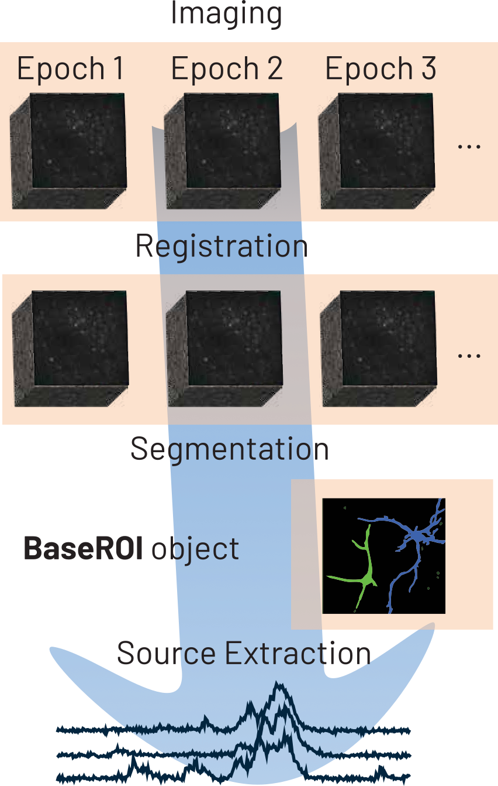
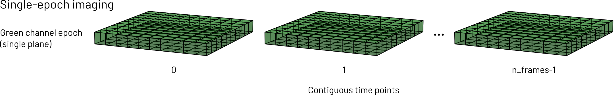
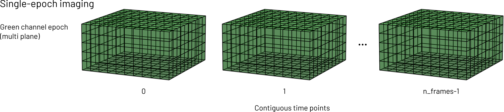
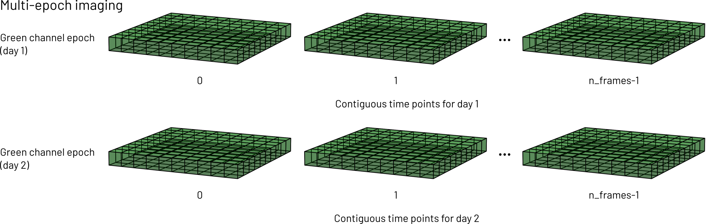

For Developers#
Developer installation#
Developers can clone photon-mosaic from GitHub
git clone https://github.com/photon-mosaic/photon-mosaic.git
cd photon-mosaic
and install with their favourite environment management tool (for example, the uv tool).
uv venv
source .venv/bin/activate
uv pip install -e ".[dev]"
The photon-mosaic architecture#
This section provides an introduction to the high-level software architecture of the photon-mosaic API, for software developers.
Prerequisites#
Initial familiarity with
object-oriented software development
lazy evaluation of operations on chunked arrays
multi-photon times series analysis
Multi-photon time series analysis#
On a conceptual level, analysing multi-photon time series typically means performing a series of image processing steps resulting in a number of regions of interest (ROIs). From each ROI, we then extract its (one-dimensional) temporal signal (“trace”), which can be processed further.
Note
While we can still conceptually think of analysis as a linear sequence of steps, some algorithms simultaneously segment the ROIs and extract their temporal signal, e.g. by minimising a function that depends on both.

For image processing, photon-mosaic defines its own data structures to represent multi-photon time series (Imaging and Epoch) and ROIs (classes derived from BaseROIs). Signal extraction from ROIs, and further signal processing steps are encoded in AnalyzerExtensions which are wrapped into an Analyzer class.
We provide notebooks demonstrating how we envision usage of photon-mosaic in our examples folder on GitHub.
Analogy to spikeinterface
For people familiar with the spikeinterface project, Imaging objects can be thought of as analogous to Recording objects in spikeinterface, while an Epoch can be thought of as analogous to a Segment. Analyzer and AnalyzerExtension classes have equivalents of the same name in spikeinterface.
Module scopes#
The photon-mosaic Python package has a number of submodules with distinct scope:
Module |
Scope |
|---|---|
Core |
Base class definitions, analyzers, core utility functions |
Extractors |
Classes that allow extraction of |
Preprocessing |
Motion correction and other pre-processing steps (return |
Sample Data |
Provision of public example data for manual testing and examples |
Segmentation |
ROI segmentation algorithms (take |
Widgets |
Interactive IPython widgets for plotting in notebooks |
Note that each submodule has its own tests/ folder for unit tests.
The mental model for Imaging and Epoch objects#
photon-mosaic takes an object-oriented approach to represent multi-photon time series. Two types of object are central to this: Imaging objects represent a collection of single-channel multi-photon time series that are (approximately) contiguous in space. One or several Epoch objects are contained within an Imaging and represent multi-photon time series that are (exactly) contiguous in space and time. This concept is visualised below:


Single- and multi-plane time series are stored in the same Epoch…

… but time series that were interrupted (e.g. consecutive days) belong in different Epoch objects, but the same Imaging object (assuming they were taken from the same anatomical location and the same imaging setup).
For example, let’s say someone acquires a 2-channel time series of a certain brain region. The acquisition is repeated daily, on the same animal and region, for three days. In this case, each day’s time series would be an Epoch containing all planes, and the two channels’ data would live in two separate Imaging objects, with three epochs each.
Time series of different brain regions should also be kept in separate Imaging objects. Sometimes, adhering to this mental model requires splitting or merging of input data. photon-mosaic provides functionality for this.
We intend the wider photon-mosaic code and external code to interact with Imaging functionality directly, while Epoch functionality should generally not be called outside the Imaging it belongs to. Imaging objects will delegate many computations to their Epoch objects as appropriate.
To support time series that do not fit into memory, Imaging objects typically read and process data lazily. The .get_series() method is the “final” operation, i.e.:
data_subset = imaging.get_series(
start_frame=50,
end_frame=500,
plane_ids=[2,3],
epoch_index=0
)
returns an in-memory numpy array containing the frames 50 to 500 of the first epoch, for two planes. It is the calling code’s responsibility to ensure this subset of the data fits into memory.
Under the hood, laziness in imaging.get_series relies on the Imaging initialiser keeping track of required operations. As an intuitive example, consider the task of reading a time series from disk and performing registration on it. The raw time series loading step is an Imaging that points to a file, and the registration is a preprocessing step that keeps track of the loading Imaging and (eagerly) pre-computes the displacement field. When .get_series is called, the code recursively works through the tree of required operations and applies it to the requested data (in this example, loading from file, and applying the displacement field to it).
Note that intermediate results are not cached implicitly, so after computationally expensive steps (e.g. registration) it is likely worth writing to file.
ROIs objects#
The segmentation module provides functionality that spatially segments Imaging objects and returns a ROIs object.
Analyzer and AnalyzerExtension objects#
Analyzer objects combine Imaging and ROIs. They provide a compute function that takes the name of an AnalyzerExtension as a string (and possibly more arguments). Different extensions may depend on each other (e.g. the df_over_f extension depends on the fluorescence_trace extension), and calling compute on an extension that depends on another extension that is not yet computed will raise an error.
Reading and writing data#
The extractors module reads data written by external software (e.g. ScanImage acquisitions or Suite2p ROIs). We partially rely on the roiextractors package, which we dynamically wrap, to support reading a wide range of raw input time series. Sometimes, we may write our own extractor (e.g. for some of suite2p’s output files). In accordance with the mental model above, we ensure we return Imaging objects with appropriate metadata, containing Epoch objects that are always four-dimensional arrays (time, height, width, planes), lazily.
We support reading and writing Imaging and ROIs object natively to binary and zarr formats.
Provenance tracking#
Imaging and ROIs objects have the additional responsibility for keeping track of metadata around the operations (lazily) applied to them, i.e. provenance. They do this via updating their internal dictionary self._kwargs with algorithm parameters and self._parent_imaging/self.parent_rois. This enables us to traverse a nested series of earlier steps’ metadata and establish provenance.
Exposing a functional API to users#
Outward-facingly, we prefer to expose functions rather than classes to users and libraries depending on photon-mosaic. This is because we think this is more elegant and user-friendly.
Pattern
class DoSomething:
do_something = DoSomething
For external collections of classes we might want to wrap, this can be done dynamically, using the Python standard library’s inspect module.
Examples of this include: